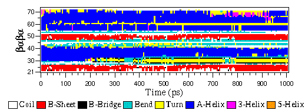

Description
The eps file format is not a special GROMACS format, but just a
variant of the standard PostScript(tm). A sample eps file as
generated by the gmx xpm2ps program is
included below. It shows the secondary structure of a peptide as a function
of time.
